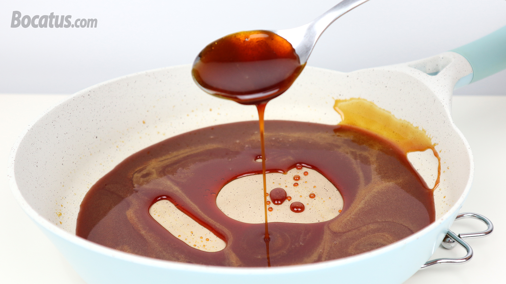
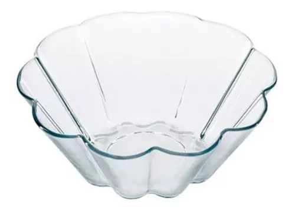
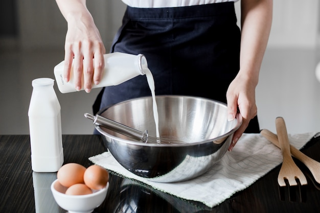
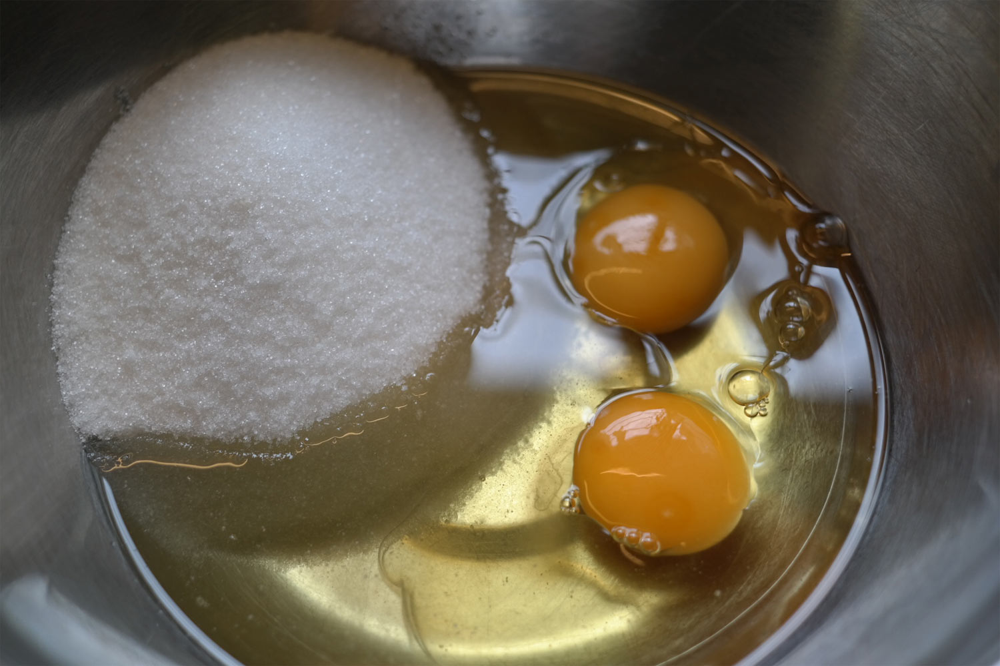

Postre: Flan español con salsa caramelo Postre: Flan español con salsa caramelo
Postre: Flan español con salsa caramelo Postre: Flan español con salsa caramelo Índice:
Índice: Ingredientes
Ingredientes Paso a Paso
Paso a PasoPoner en una flanera de vidrio templado de 1 litro de capacidad el azúcar, jugo de limón y agua fría. Mezclar. Cocinar de 7 a 9 minutos al 100% de potencia, o hasta lograr un caramelo rojizo fuerte.
Verter inmediatamente este caramelo en un bol de vidrio templado, pero dejando un poco en la base de la flanera. Agregar en forma rápida y con cuidado el agua caliente el caramelo que esta en el bol y mezclar. Enfriar ambos.
Coloca en un bol la leche y cocinar 3 minutos al 100% de potencia.
Mezclar los huevos con el azúcar sin batir, agregar la leche templada y perfumada con la esencia de vainilla. Colar y pasar a la flanera acaramelada. Cubrir. Cocinar de 20 a 24 minutos al 50% de potencia. Dejar enfriar y desmoldar.
Servir el flan con un poco de crema chantill y salsear con la salsa de caramelo.
 Resultado final
Resultado final